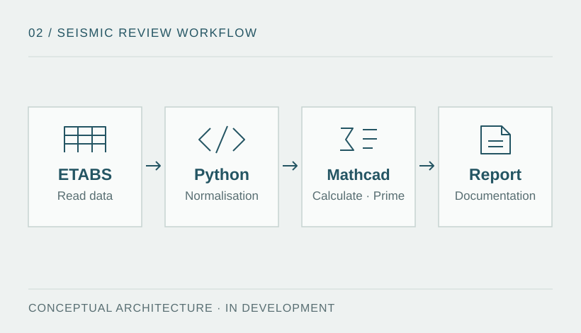

Technical problem and objective
Transferring structural model results to spreadsheets and reports requires control of units, case names and the correspondence between inputs and results. Manual transcription makes it difficult to trace a value's origin and review model changes.
Objective: design a reproducible workflow that reduces transcription errors and allows each check to be traced back to its source data. The proposed architecture reads ETABS data without modifying the model and keeps a record of subsequent processing.

Methodology and tools
- ETABS / API: planned extraction of model properties, storeys, masses, systems, internal forces and drifts, subject to data availability and quality.
- Python: data structure and validation, unit normalisation, detection of missing values and logging of review states.
- Mathcad Prime: visible formulation of calculations and assumptions within the scope to be defined.
- Report: inputs, references, tables and conclusions traceable to the source model.
Planned procedure
- Set the scope: identify the code edition, included checks, structural system and required data before programming rules.
- Extract and validate: check units, table integrity, identifiers and analysis cases before accepting data.
- Apply checks: develop checks for defined seismic parameters, regularity criteria and drift, with explicit references.
- Provide distinct states: “pass”, “fail”, “not applicable” and “data error”, avoiding any interpretation of missing input as a favourable result.
- Compare and document: compare against independently solved examples and retain versions of inputs, rules and results.
Development status
The architecture and requirements are defined. The working implementation, testing with real data and final report format remain in development. An executable checking engine is not yet included in the portfolio.
| Available | Required for validation |
|---|---|
| Description of components and data flow. | Integration code, data contracts and version compatibility. |
| Planned review states and traceability criteria. | Test cases, independent calculation checks and reproducible results. |
| Architecture diagram. | Authentic ETABS and Mathcad screenshots, a Python execution record and a sample report. |
Technical approach
Separating extraction, validation, calculation and presentation helps locate an error while preserving the origin of the data. The workflow is designed to retain units, assumptions and references for each result, and to distinguish incomplete input from a completed check.